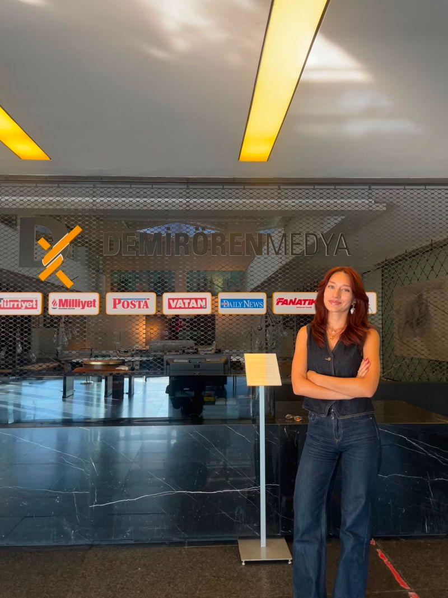

2026
AI, Data & Software Intern
STAJDemirören Medya · İstanbul
Kurumsal SOC operasyonları için şüpheli e-posta ve tehdit kayıtlarını analiz edip sınıflandıran yapay zekâ destekli bir triyaj ajanının geliştirilmesine katkı sağladım.
İSTANBUL, TÜRKİYE / YAZILIM & YAPAY ZEKÂ
Fikirleri çalışan ürünlere dönüştüren bir bilgisayar mühendisi adayıyım. Yapay zekâ, görüntü işleme ve web teknolojileriyle anlamlı çözümler üretiyorum.

01 / HAKKIMDA
Bilgisayar mühendisliği eğitimim boyunca yazılım geliştirme, yapay zekâ ve bilgisayarlı görü alanlarında projeler üretiyorum. Bir fikri araştırıp çalışan bir ürüne dönüştürmek, benim için en heyecan verici öğrenme biçimi.
Takım içinde paylaşarak öğrenmeye, yeni teknolojileri denemeye ve gerçek problemlere sade çözümler geliştirmeye inanıyorum.
02 / DENEYİM
Demirören Medya · İstanbul
Kurumsal SOC operasyonları için şüpheli e-posta ve tehdit kayıtlarını analiz edip sınıflandıran yapay zekâ destekli bir triyaj ajanının geliştirilmesine katkı sağladım.
KOBİZON PDM · Zonguldak Teknopark
Python ile veri bilimi ve veri analizi çalışmalarında görev aldım. NumPy ve Pandas kullanarak verileri düzenleme, temizleme, dönüştürme ve analiz için hazırlama süreçlerine katkı sundum; veri odaklı problemlere yönelik analizler gerçekleştirdim.
Women in Tech Community · Bülent Ecevit Üniversitesi
Kadın kongreleri ve sosyal farkındalık etkinliklerinde gönüllü oldum; sosyal medya içerikleri ve etkinlik organizasyonuna destek verdim.
Google Developer Student Club · Bülent Ecevit Üniversitesi
Android Studio ile 70’ten fazla kişiye mobil uygulama geliştirme eğitimleri verdim. Yazılım ekibine liderlik ederek projelerin planlanmasına ve ilerletilmesine katkı sağladım; kod incelemeleri ve mentorlukla ekip arkadaşlarımın gelişimini destekledim.
Teknofest İHA Takımı · İnönü Üniversitesi
Teknofest İHA projesinde Python ve OpenCV kullanarak görüntü işleme ve hedef tespit çalışmalarına katkı sağladım.
03 / SEÇİLİ İŞLER
React ve TypeScript ile geliştirilen, REST API üzerinden Node.js backend'ine bağlanan canlı web uygulaması. Özel alan adında yayında.
Next.js ve TypeScript ile geliştirilen; servis ve müşteri bilgilerini gösteren, mobil uyumlu web deneyimi.
PyQt5 masaüstü arayüzü, kamera ve yapay zekâ modülleriyle gerçek zamanlı kimlik doğrulama sistemi geliştiriyorum.
İstanbul'un tarihî ve kültürel noktalarını tanıtan ekip projesinde Node.js ve PostgreSQL ile backend geliştirmesine katkıda bulundum.
04 / KISA BİR MOLA
Kaktüslerden kaç, rekorunu kır.
Başlamak için zıpla!
05 / EĞİTİM
LİSANS · BİLGİSAYAR MÜHENDİSLİĞİ
Zonguldak · 2023 — Devam ediyor
06 / ARAÇ ÇANTAM
YENİ FIRSATLARA AÇIĞIM
Bana bir mesaj bırak; bilgilerin Gmail’de yeni bir taslak olarak açılır.
DOĞRUDAN E-POSTAsukranyilmaz1144@gmail.com↗